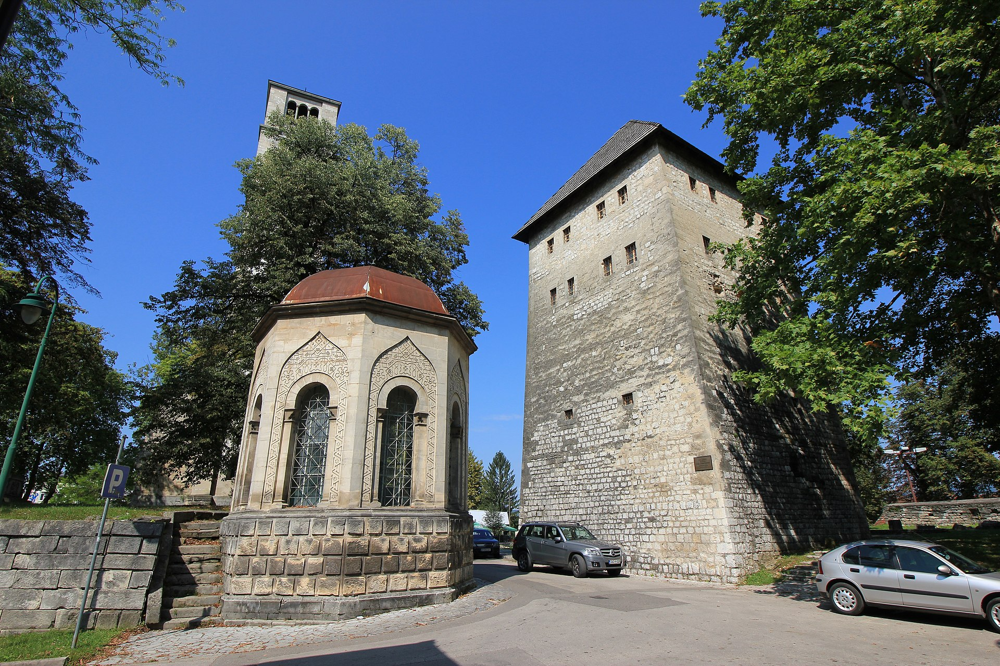
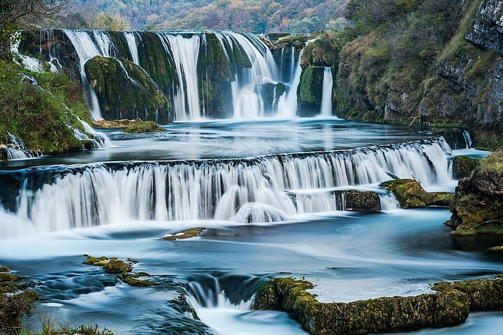
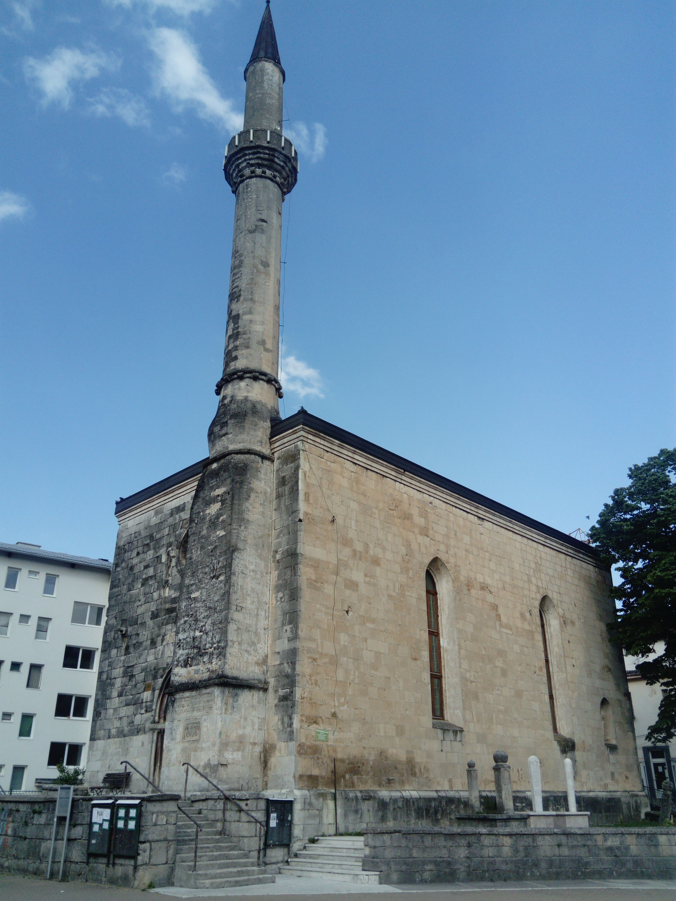

Must Visit Places

Kapetanova kula, also known as Captain's Tower, is the oldest building in Bihać...

Štrbački Buk is one of the most stunning waterfalls in Bosnia and Herzegovina...

Fethija Mosque is the only preserved Gothic-style mosque in Bosnia...